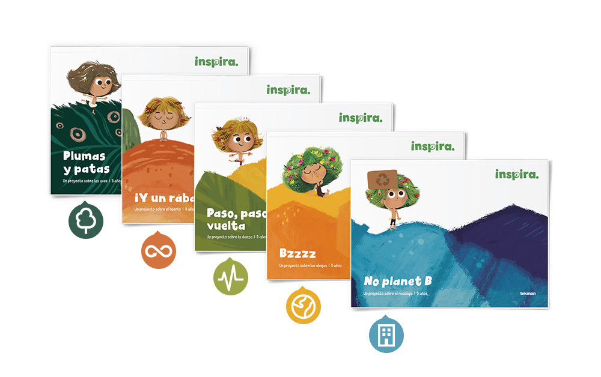

¿QUIÉNES SOMOS?

Somos una empresa dedicada a la recolección y comercialización de materiales ferrosos
(chatarra) y no ferrosos (cobre,
bronce, aluminio, cartón, vidrios, plásticos y papelería) con esta actividad ayudamos a la
preservación
del medio ambiente; permitiendo la reutilización de dichos materiales para posteriores
procesos de
transformación en materias primas.
Disminuimos las emisiones de gases de invernadero que contribuyen al cambio climatológico
global..
de manera asociativa, realizamos las actividades de recolección, separación y
comercialización de
residuos para el reciclaje, obteniendo ingresos a partir de la venta de materiales
reciclables a empresas recuperadoras, intermediarios y centros de reciclaje.
¿QUÉ NOS INSPIRA?
Reciclar es mucho más que una simple acción; es un compromiso con el futuro del planeta y con las generaciones venideras. Cada vez que reciclamos, transformamos lo que podría ser desechado en nuevos recursos, reduciendo así la demanda de materiales vírgenes y minimizando la contaminación. Imagínate un mundo donde cada esfuerzo cuenta: al reciclar, estamos contribuyendo a conservar los recursos naturales, proteger los ecosistemas y reducir la cantidad de residuos en nuestros vertederos. Esta práctica, aunque pueda parecer pequeña en el momento, tiene un impacto profundo en la salud de nuestro planeta y en la calidad de vida global. Inspírate en el poder del reciclaje para ser parte activa de una solución sostenible, donde cada acción cuenta y cada elección marca la diferencia.
MISIÓN
Nuestra misión es fomentar una cultura de sostenibilidad a través del reciclaje consciente y efectivo, promoviendo la reducción, reutilización y reciclaje de recursos para proteger el medio ambiente y conservar los recursos naturales para las generaciones futuras. Nos dedicamos a educar y empoderar a comunidades, empresas e individuos para adoptar prácticas de reciclaje responsables y eficientes, asegurando que cada material reciclable sea transformado en nuevos productos y que cada esfuerzo contribuya a un mundo más limpio y saludable. Creemos que, al unirnos en esta causa, podemos lograr un impacto positivo significativo en la reducción de desechos y en la preservación de nuestro planeta.
VISIÓN
Nuestra visión es un mundo donde el reciclaje sea una práctica universalmente integrada y valorada, donde cada persona, comunidad y empresa participe activamente en la gestión responsable de los recursos. Imaginamos un futuro en el que los materiales reciclables se transformen en nuevas oportunidades económicas, fomentando una economía circular que minimice el desperdicio y maximice el uso eficiente de los recursos. En este mundo, la conciencia ambiental y la innovación impulsan la reducción de residuos, la conservación de la biodiversidad y la mitigación del cambio climático. Creemos que, al adoptar una mentalidad de reciclaje y sostenibilidad, podemos construir un entorno más limpio, saludable y equilibrado para todos.